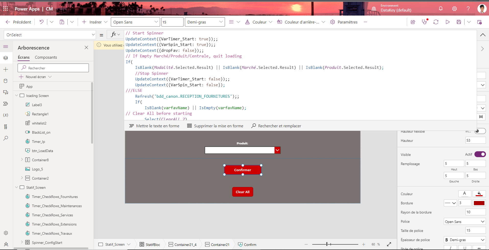

A propos
Bonjour et Bienvenue!
Je m'appelle Kevin Delattre, Etudiant développeur d'applications en alternance depuis 2 ans maintenant au Lycée Gaston Berger, (BTS SIO SLAM). Ayant commencé en auto-didacte pour ensuite retourner derrières les bancs de l'école tout en étant embauché par une jeune start-up, l'informatique fût une reconversion réussie.
Vous trouverez sur ce site tous mes projets personnels, scolaires ainsi que professionnelles.
Vous trouverez également la grille d'évaluation de BTS SIO SLAM 2022-2023 afin d'illustrer mes différentes compétences acquéries durant mes 2 années d'études.
Vous pourrez enfin me contacter avec les différents liens mis à disposition en bas de page.
Présentation de Datakhi
Datakhi est une jeune start-up crée en Mars 2020 qui a pour objectif d'accompagner ses partenaires et clients sur l'ensemble de leurs projets. Cela peut aller de l’identification des données à forte valeur ajoutée au sein de leur système opérationnel jusqu’à la mise en place d’une solution de datavisualisation permettant de les exploiter.
Je suis arrivé au sein de leur équipe depuis Septembre 2021, où j'ai pu dabord monter en compétence sur des sujets de Backend mais aussi apprendre à utiliser plusieurs outils de versionning comme Git.
Au fil des mois, j'ai pu prendre part à l'ensemble du développement d'une solution applicatif de simulation de devis pour la société Canon Médical, du maquettage au déploiement jusqu'à la maintenance.
En plus d'avoir pu assiter l'équipe sur divers sujets, j'ai pu également passer ma certification PL-300 (Power BI)
Ma dernière mission en date est d'assister l'équipe Data/Dev de la société IDKids pour la réalisation d'API afin d'optimiser les performances internes de la société.
Projets


Puissance 4
Vous pouvez retrouver le projet sur le lien suivant:
Puissance 4
Projet C++ effectué lors de ma montée en compétence avec ce langage, pour 2 joueurs en local.
Beep Song
Vous pouvez retrouver le projet sur le lien suivant:
Beep Song
Projet C++ générant de la musique à partir d'un fichier .txt contenant une suite de note de musique (annotation anglaise).
Elle utilise la bibliothèque d'alertes sons du processeur de l'ordinateur pour générer les sons.

Virtual Piano
Vous pouvez retrouver le projet sur le lien suivant:
Virtual Piano
Projet Javascript mettant à disposition un piano virtuel interactive (avec des animations css en bonus)
Projets à Datakhi
-
Powergit:
Projet interne de développement d'un logiciel de versionning
Backend: C++
FrontEnd: NodeJS/React/Electron
-
Canon Medical:
Création d'une solution de devis applicative
Outils: Powerapps/Power Automate/ SharePoint/ Azure
-
France Drilldown:
Correctif de bug d'un projet en TypeScript
-
PowerShell Adeo:
Déploiement d'un script permettant le backup automatique des rapports PowerBi du client
CM (Dev window) CM (Maquette)
CM (Maquette) PowerGit Backend dev part
PowerGit Backend dev part France Drilldown (Visuel PowerBi)
France Drilldown (Visuel PowerBi) Extrait de Script
Extrait de Script
Développement d'API
Développement en interne d'API chez le client IDKIDS à l'aide d'outil comme Nest.JS, PostMan, Node.Js, Jest, Husky, Docker
Projets scolaires
-
CV
Projet de 1ere année en atelier pratique faisant découvrir les bases d'utilisations des balises ainsi que des cas d'utilsiations standards de CSS .
Développé en HTML/CSS
-
Site internet Restaurant Ebisu
Projet de 1ere année en atelier pratique demandant de créer un site internet vitrine pour une société de restauration factice Ebisu.
Création de MCD/MLD/Modéle IHM en amont, conception de la base de données via WAMP.
Développé en HTML/CSS/JS
-
MariaDB Galera
Mise en place d'un cluster MariaDB Galera avec un VM Debian afin d'assurer l'intégrité d'une bdd virtuel
Outils: Debian / VM Ware / MariaDb
-
MarieTeam
Projet de seconde année demandant de créer un site internet vitrine pour une société de transport maritime. Développement d'une application lourde en parallèle permettant au utilisateur de pouvoir générer une brochure en format PDF à partir de leur sélection.
Création de MCD/MLD/Modéle IHM en amont, conception de la base de données via WAMP.
Outils: WAMP / Bootstrap Studio / WebStorm/ VS Code/ DigitalOcean
Langages: C#/PHP/SQL/CSS/JS (AJAX)


C.V
Vous pouvez retrouver mon cv sur ce lien:
CV
Compétences
Veille Technologique
Ma veille technologique durant mes études s'est principalement arrêté sur plusieurs thématiques tournées autour des langages informatiques que nous utilisons au sein de notre entreprise, néanmoins une technologie ressortait du lot.
Thématique:
-
Power Platform
Outils utilisés:
-
TLDR:
Newsletter journalier synthétisant en une page les dernières nouvelles Tech et IT
-
PP Dev Weekly:
Newsletter hebdomadaire dédiés uniquement aux dernieres nouveautés des outils Power PLatform.
-
Tutanota:
Service de messagerie électronique hautement sécurisé permettant de mettre en place des alias afin d'éviter la diffusion de notre identité.
Il permet également de mettre en place des régles de gestion de flux, catégorisant facilement les différents types de mail & spam. -
Programmez.com :
Site Français crée il y a 25 ans maintenant recensant les dernières actualités de l'univers de la programmation de manière journalière, à l'aide d'article, blog et podcasts. Disponible également en format papier.
-
Reddit PowerPlatform :
Forum de partage d'informations. Certaines sources doivent néanmoins être vérifiées avec plus d'assiduités.
Gallerie Veille Technologique


Contacts
Email: kevin.delattre@gastonberger.fr